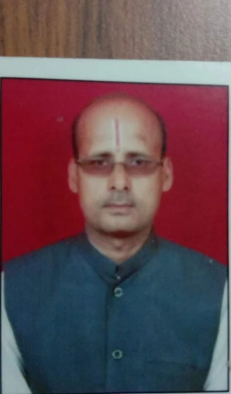

पंडित बी.एन. शास्त्री
ज्योतिष एवं वास्तु शास्त्र विशेषज्ञ
35+ वर्षों के अनुभव के साथ प्रसिद्ध ज्योतिष और वास्तु विशेषज्ञ। वृहद् कर्मकाण्ड, जन्मपत्री, टेवा, विवाह, हवन आदि मांगलिक कार्यों के लिए मिलें। व्यक्तिगत ध्यान देकर जीवन की समस्याओं का ज्योतिषीय समाधान उपलब्ध है। अनुष्ठान और उपाय आपके जीवन में शांति, समृद्धि और सुख-शांति लाने के लिए तत्पर हैं। आज ही संपर्क करें और भविष्य को उज्जवल बनाएं।